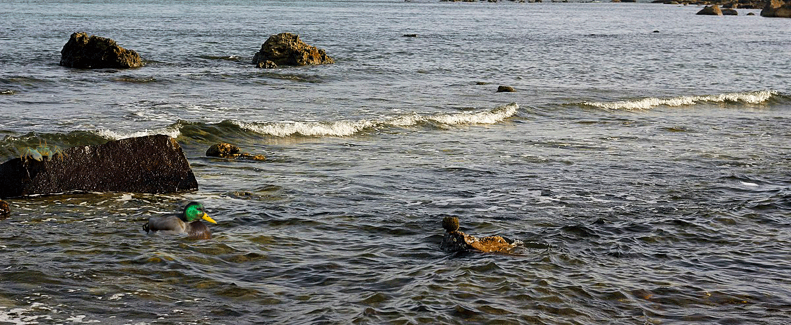
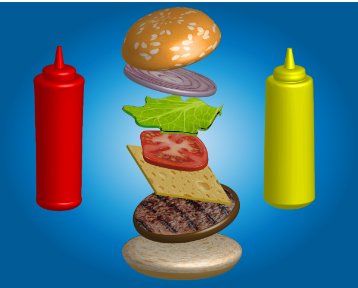

---
layout: default
title: About
url: "https://newtfire.github.io/onlinePortfolio/Comm270.html"
---
    <section>
        <h1>Natalya Myers Portfolio</h1>
        <p>Two of my Digital Media projects from this semester were a frame animation and a 3D render. You can see both of these works below.</p>
        
        
        </section>
